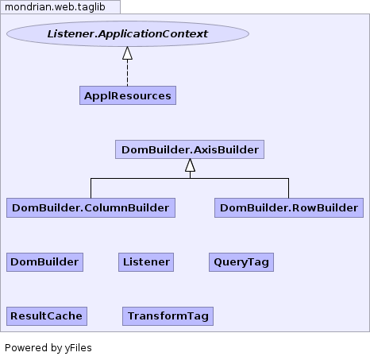

- Overview
- Package
- Class
- Tree
- Deprecated
- Index
- Help
See: Description
| Interface | Description |
|---|---|
| Listener.ApplicationContext |
| Class | Description |
|---|---|
| ApplResources |
Holds compiled stylesheets.
|
| DomBuilder |
Transforms a mondrian result into a DOM (Document Object Model).
|
| Listener |
Listener creates and destroys a ApplResources at the
appropriate times in the servlet's life-cycle. |
| QueryTag |
A
QueryTag creates a ResultCache object and initializes
it with the MDX query. |
| ResultCache |
Holds a query/result pair in the user's session.
|
| TransformTag |
A
TransformTag renders the result of a ResultCache
object. |
| Revision | $Id$ |
|---|---|
| Copyright | Copyright (C) 2002-2005 Julian Hyde Copyright (C) 2005-2007 Pentaho and others |
| Author | Julian Hyde |
QueryTag and TransformTag.
<%@ page language="java" %>
<%@ taglib uri="/WEB-INF/mdxtable.tld" prefix="mdx" %>
<mdx:query name="query1" resultCache="true">
select
{[Measures].[Unit Sales], [Measures].[Store Cost]} on columns,
CrossJoin(
{ [Promotion Media].[All Promotion Media].[Radio],
[Promotion Media].[All Promotion Media].[TV],
[Promotion Media].[All Promotion Media].[Sunday Paper],
[Promotion Media].[All Promotion Media].[Street Handout] },
[Product].[All Products].[Drink].children) on rows
from Sales
where ([Time].[1997])
</mdx:query>
The current slicer is <strong>
<mdx:transform query="query1"
xsltURI="/WEB-INF/mdxslicer.xsl"
xsltCache="true"/>
</strong>.
<p>
<mdx:transform query="query1"
xsltURI="/WEB-INF/mdxtable.xsl"
xsltCache="false"/>
</p>
This package is dependent upon the following other packages:
mondrian.olap, but NOT mondrian.rolapjavax.servlet, javax.servlet.jspjavax.xml.parsersjavax.xml.transformorg.w3c.domjava.lang, java.io, java.util